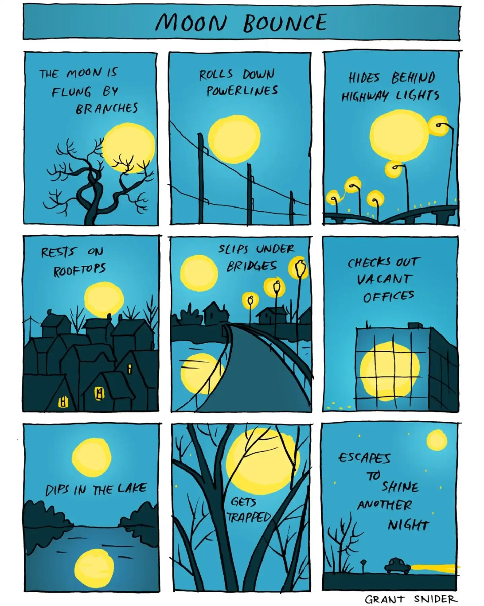

Happy Thursday! Thank you for supporting the Daily Bulletin project.
- Suggest improvements to the Daily Bulletin project.
- Unsubscribe if you no longer wish to receive emails from the Daily Bulletin project.
Wellbeing Inspirations
Want to contribute to a future Daily Bulletin? Share your inspirations to give everyone some morning wellbeing energy!
Cartoon of the Day

Created by Grant Snider.
Delicious Dinings
| Day | Meal | Options |
|---|---|---|
| Thu | Breakfast | Continental Counter |
| Lunch | Roast Cauliflower Dahl 🌱 | |
| Frittata 🌱 | ||
| Dinner | Barbeque Chicken Legs | |
| Veggie Quesadillas 🌱 | ||
| Fri | Breakfast | Burrito |
| Lunch | Fish & Chips | |
| Crispy Buttermilk Quorn 🌱 | ||
| Dinner | Pepperoni Pizza | |
| Roast Pepper & Balsamic Pizza 🌱 |
The catering team would like to remind everyone to wash their hands before coming to the dining hall, and to refrain from eating in the servery area. Thank you!
Retrieved from Shared Weekly Menu. For reference only; accuracy not guaranteed.
Important Events
| Day | Time | Event | Location |
|---|---|---|---|
| Thu–Fri | Project Week | — | |
| Fri | 16:00–17:00 | Friday Night Lecture | Bradenstoke |
| 20:30–22:00 | SOSH | Tythe Barn | |
| 20:00–22:00 | Hideout | Moondance | |
Retrieved from What's On This Week.
Today in History
- 1169 – Saladin was inaugurated as vizier of Egypt.
- 1974 – A group of peasant women in Chamoli district, Uttarakhand, India, surrounded trees in order to prevent loggers from felling them, giving rise to the Chipko movement.
Retrieved from Wikipedia.
Today in News
- Cuban president says Raúl Castro involved in US talks that are in early stages
- UN calls for reparations to remedy the ‘historical wrongs’ of trafficking enslaved Africans
- What men and women think about gender and pay, according to a new AP-NORC poll
Retrieved from the Associated Press.